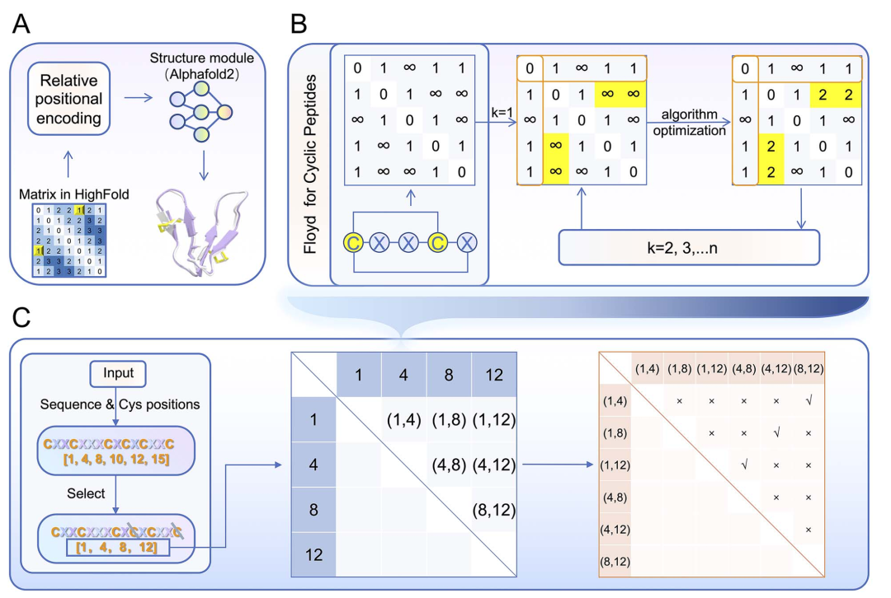
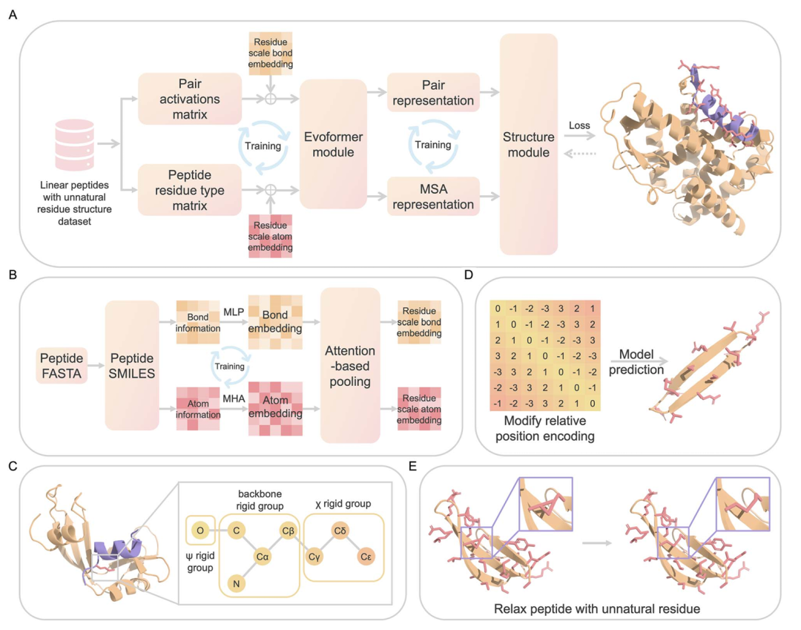
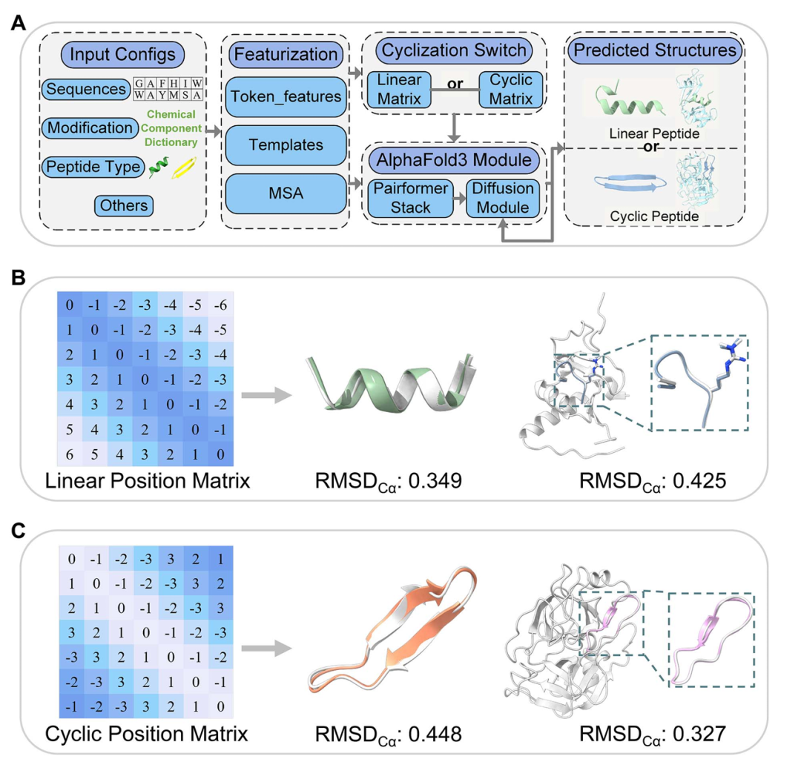
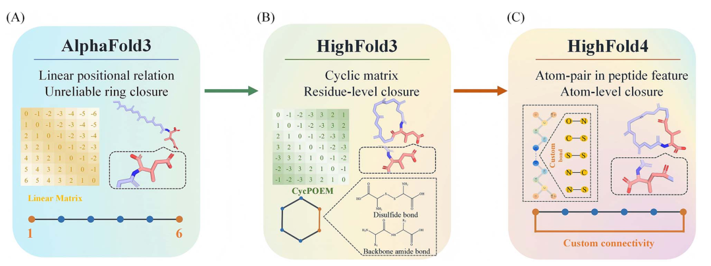

我最近把 HighFold 1 到 4 连着看了一遍。四篇文章从 2024 年排到 2026 年，题目都围绕环肽结构预测，读起来很像同一个团队在持续修一处老问题。
这处问题很具体。通用蛋白结构模型习惯把一条肽链看成线性的。环肽的两端却已经接上了，很多体系还有二硫键、侧链交联、内酰胺环，甚至掺进非天然氨基酸。模型若只知道一串残基的顺序，最后常会得到一个看着像环肽、局部也不太离谱的构象，闭环的方式却错了。
这种错在环肽设计里很麻烦。序列生成、对接打分、结合面分析都可以排在后面做，前提是你手里的结构至少是那个化学实体。一个应当由 Lys 和 Asp 侧链形成内酰胺环的分子，若被模型当成普通线性肽来理解，后面那一长串分析就缺了起点。
把四篇论文放在一起读，推进路线很清楚。第一代先改掉线性链的默认假设。第二代开始处理非天然残基。第三代把环肽放到 AlphaFold3 的复合物语境里。到了第四代，用户终于能把环化连接写到原子和键的层面。
这张表想突出的是每一代到底给模型加了什么信息。HighFold 的变化可以理解成输入表示的逐步加细。第一代告诉模型残基如何绕成环，第二代补上原子与键，第三代把这些信息带进 AF3 的复合物建模，第四代直接指定成键原子对。
2024 年的 HighFold 建在 AlphaFold2 和 AlphaFold-Multimer 上。它最重要的改动叫 CycPOEM，中文可以理解为环肽位置偏移编码矩阵。
AlphaFold 的相对位置编码原本服务于线性链。第 1 个残基和最后一个残基在序列上相距很远，模型自然会把它们当作远端。HighFold 把这个位置关系改掉，让模型在特征层面看到首尾已经相连。

环肽的首尾连接和二硫键先被改写为残基图上的路径信息，再交给 AlphaFold 处算法层面，它先按肽键、头尾环化和一组候选二硫键建立残基图。图上的边代表可以走通的化学连接。接着，FCP 算法借用 Floyd-Warshall 的思路，计算任意两个残基之间的最短路径。路径长度替换原来 AlphaFold 的线性相对位置偏移。
这里还有一个容易漏掉的细节。肽键具有 N 端到 C 端的方向性，二硫键没有这个方向。CycPOEM 除了记录最短路径，还用正负号保留肽链方向，并用 0 标记二硫键。这样送进 Evoformer 的 pair representation 同时拿到距离、环拓扑和连接类型的提示。
二硫键也写进了同一张矩阵。序列里只有一对 Cys 时，问题还算直接。Cys 多起来以后，哪两个 Cys 配对会改掉整个约束网络。HighFold 会枚举可能的二硫键连接方案，分别预测，再用置信度相关指标排序。
这一步听着朴素，放在环肽里却很要紧。二硫键一旦配错，错误不会停在硫原子附近，整条链都会换一套收拢方式。第一代有 63 条天然环肽的单体测试集，也做了环肽与蛋白复合物的评估。它解决的是一件基本功，先把“环”当成模型输入的一部分。
我比较认可这个方向。很多结构模型的结果看起来有立体感，读者也容易被 pLDDT 或某个 RMSD 吸引。环肽这里要先问一个更早的问题，模型输入的拓扑是否对了。拓扑写错，分数再漂亮也很难解释。
环肽一旦往药物设计里走，天然氨基酸通常很快就不够用了。非天然残基可以调构象、稳代谢、改通透性，也会让结构预测变得更难。
HighFold2 沿用了环化矩阵，同时给 AlphaFold-Multimer 加了非天然氨基酸的原子级特征。作者扩展了残基的刚体基团和初始原子坐标，又加入一个原子尺度的肽特征网络。模型在 MSA 里仍会把这类残基视作未知字符，额外特征负责把不同化学组成区分开。

HighFold2 用原子和键描述非天然残基，再把这些信息汇总回 AlphaFold 能读懂的残基层面。
这代的算法补丁比第一代多一层。模型从肽的 SMILES 获得原子元素和原子间键的信息，先分别编码，再用多头注意力学习一个残基内部哪些原子更值得看。随后它按原子属于哪个残基的掩码做 attention pooling，把原子尺度信息折回 residue-scale embedding，和原来的肽残基类型矩阵一起输入 Evoformer。
论文对键也做了 one-hot 表示，覆盖单键、双键、三键、芳香键和离子键。这个设计解决了一个很现实的表示问题。MSA 里的 X 没有能力告诉模型环上是一个环己基、卤代芳环还是一段带电侧链，原子和键特征补上了这层差别。
论文的数据量也值得放在这里讲。作者整理到 419 条去重的、含非天然氨基酸的线性肽三维结构，用它们微调 AlphaFold-Multimer 的五组参数。可用的含非天然氨基酸环肽只有 34 条，全部留作测试。
这组数字让我对第二代的结果会更克制一点。环肽测试中位 Cα RMSD 报到 1.891 Å，说明它在这批结构上能做出有竞争力的复原。34 条环肽支撑不了太宽的泛化结论，尤其当序列、环化方式和修饰化学同时变化时。
HighFold2 的边界也写得很清楚。它主要拓展了非天然残基的侧链表示，主链仍沿用 AlphaFold-Multimer 对标准 α 氨基酸骨架的假设。遇到明显偏离天然肽主链的化学改造，模型手里能用的信息仍然有限。
HighFold3 用上 AlphaFold3 的预训练参数。AF3 可以通过 Chemical Component Dictionary 表示更多非标准组分，这让第三代不必继续沿着第二代那种手工扩展残基刚体组的路线走。
它保留 CycPOEM，又加入了 Cyclization Switch。输入线性肽时走普通位置矩阵，输入环肽时切换到环肽矩阵。论文还把模型拆成 HighFold3-Linear 和 HighFold3-Cyclic 两个子模型，并支持在一个蛋白受体周围放入多个环肽配体。

HighFold3 在进入 Pairformer 和扩散模块之前，已经把输入切换成匹配线性肽或环肽拓扑的表示。
HighFold3 的 CycPOEM 可以看成对相对位置矩阵做了一次图最短路重算。对环肽序列 S，它构建一个 N × N 的距离矩阵。相邻残基的距离设为 1，首尾环化也被设为 1，然后按 D[i,j] = min(D[i,j], D[i,k] + D[k,j]) 更新所有残基对。矩阵再根据肽键方向补上符号，二硫键位点按无方向连接处理。
它和 HighFold1 的区别在于，这张矩阵不再只服务 AF2 的 Evoformer。HighFold3 把环化矩阵放进 AF3 的输入与 pair feature 流程，后面接的是 Pairformer stack 和 diffusion module。对多环肽配体，作者为每条肽构建各自的矩阵块，再与受体特征组合。这也是它能处理多个环肽同时围绕一个靶点建模的基础。
我觉得这一代有一个很实际的转向。前两代最直接的问题是环肽能不能把自身构象折对。第三代把问题放到复合物中，配体到了结合位点以后还能不能保持合理的构象，才开始成为重点。
不过，它处理环化的主要手段仍是位置和几何约束。模型知道一段链应当闭合，也能处理常见的头尾环化和二硫键。用户还不能在输入里清楚地告诉模型，哪两个原子之间要形成哪种键。
这个缺口留给了第四代。
2026 年的 HighFold4 仍基于 AlphaFold3。作者没有再训练一套模型，而是改了 AF3 接收共价连接信息的通路。
用户可以定义两个原子之间的连接和键类型，模型把这张连接图编码进 pair feature。于是，环化不再只是“首尾距离应该很近”这一类几何提示，它有了明确的化学身份。

HighFold4 把具体的成键原子对和键型送进 AF3 的 pair feature，才能覆盖非标准的侧链环化。
它的关键改动发生在 AF3 的 pair feature 构建阶段。作者把用户给出的原子对连接整理成稀疏邻接矩阵 G，再转成原子对层面的稠密表示，通过 bond embedding 加入 pair feature。后面的 Pairformer 与扩散过程于是能直接读到哪两个原子通过什么键相连。
这和 CycPOEM 的位置偏移约束有差别。CycPOEM 擅长表达环上残基之间的拓扑距离，也能约束头尾环和二硫键。HighFold4 的连接图可以保留具体原子身份。Lys 的 ε 氨基与 Asp 的侧链羧基形成内酰胺环时，模型会直接得到这对原子之间指定的共价键。
这带来的能力很直接。头尾环和二硫键当然还在，侧链到侧链的环化、头端到侧链的连接、内酰胺环，以及按特定原子连接定义的自定义宏环，也都可以进入模型。
HighFold4 汇总了 179 个 PDB 结构做评估，覆盖天然与非天然残基的单体和复合物。作者报告所有测试任务的闭环成功率达到 100%。这个结果说明连接约束能被模型稳定遵守，还不能直接拿来代表环肽设计已经成功。
论文里还有一个细节很能说明第四代的变化。HighFold3 和 HighFold4 在常规头尾环、二硫键环肽上表现接近。第四代的增量主要出现在非标准连接方式。对做天然环肽基准的人，这不一定需要换模型。对做内酰胺环、侧链环化或复杂交联的人，输入里能否说清那根键，常常直接决定这个预测有没有用。
四篇文章都报告了结构精度，数字却不适合直接排成名次。HighFold1 的重点是天然环肽的拓扑约束。HighFold2 面对的是很小的含非天然氨基酸环肽测试集。HighFold3 和 HighFold4 换成了 AF3，还加入了复合物、多个配体和更多闭环化学的任务。
数据集、底座模型和任务边界都在变。横向看数字很容易，得到的结论却常常很虚。
我更愿意按设计分子本身来选工具。天然头尾环或二硫键环肽，可以先看 HighFold1 提出的拓扑约束怎样影响结果。非天然侧链进入体系后，HighFold2 和 HighFold3 提供了两条不同的路线。项目若关心蛋白复合物里的环肽构象，HighFold3 的任务设定更近一些。环化来自侧链、内酰胺或其他非标准键时，HighFold4 的自定义连接会更匹配。
这四篇论文还有一个共同的边界。核心验证来自已解析 PDB 结构上的计算复原。我没有看到它们为新预测结果补做湿实验结合、活性或细胞数据。
因此我会把 HighFold 看成环肽设计管线中的结构评估工具。它能帮人早点排除拓扑不通、闭环方式不对、化学连接没有被模型理解的候选。亲和力、选择性、细胞活性和成药性还得回到后续计算与实验闭环里确认。
HighFold 走到第四代，至少把一个长期存在的模糊环节讲清楚了。环肽预测需要把环的身份和闭环用到的键写清楚。